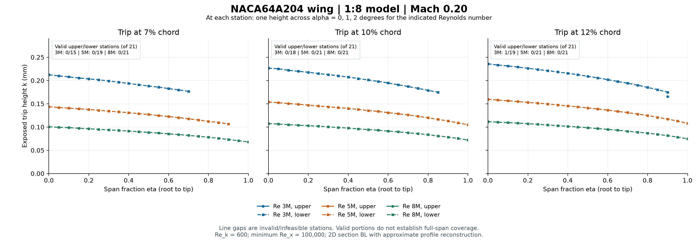

Model geometry: root/tip chord 0.695/0.125 m; reference MAC 0.578625 m. Linear dimensions use 1:8 scaling. Heights in every table are millimetres. The plotted span covers the 21 supplied stations of the left panel.
Partial coverage is not a full-span design. Blank heights and line gaps indicate failed applicability or sizing checks. Ranges use valid stations only. A uniform height is reported only if one height passes every sampled station on both surfaces across the stated condition group. Taking the largest height from a partial set does not establish a usable uniform trip.

| x/c | Surface | Valid stations | Root k | Midspan k | Tip k | Range on valid stations only | Uniform k, both surfaces/all stations |
|---|---|---|---|---|---|---|---|
| 7% | upper | 0/21 | invalid | invalid | invalid | —–— | unavailable |
| 7% | lower | 15/21 | 0.212231 | 0.188020 | invalid | 0.176648–0.212231 | unavailable |
| 10% | upper | 0/21 | invalid | invalid | invalid | —–— | unavailable |
| 10% | lower | 18/21 | 0.226600 | 0.201109 | invalid | 0.174785–0.226600 | unavailable |
| 12% | upper | 1/21 | invalid | invalid | invalid | 0.165691–0.165691 | unavailable |
| 12% | lower | 19/21 | 0.235904 | 0.209022 | invalid | 0.174834–0.235904 | unavailable |
| x/c | Surface | Valid stations | Root k | Midspan k | Tip k | Range on valid stations only | Uniform k, both surfaces/all stations |
|---|---|---|---|---|---|---|---|
| 7% | upper | 0/21 | invalid | invalid | invalid | —–— | unavailable |
| 7% | lower | 19/21 | 0.143609 | 0.126950 | invalid | 0.106641–0.143609 | unavailable |
| 10% | upper | 0/21 | invalid | invalid | invalid | —–— | unavailable |
| 10% | lower | 21/21 | 0.153640 | 0.135442 | 0.104681 | 0.104681–0.153640 | unavailable |
| 12% | upper | 0/21 | invalid | invalid | invalid | —–— | unavailable |
| 12% | lower | 21/21 | 0.159542 | 0.140958 | 0.107916 | 0.107916–0.159542 | unavailable |
| x/c | Surface | Valid stations | Root k | Midspan k | Tip k | Range on valid stations only | Uniform k, both surfaces/all stations |
|---|---|---|---|---|---|---|---|
| 7% | upper | 0/21 | invalid | invalid | invalid | —–— | unavailable |
| 7% | lower | 21/21 | 0.100463 | 0.088438 | 0.067812 | 0.067812–0.100463 | unavailable |
| 10% | upper | 0/21 | invalid | invalid | invalid | —–— | unavailable |
| 10% | lower | 21/21 | 0.107193 | 0.094439 | 0.071978 | 0.071978–0.107193 | unavailable |
| 12% | upper | 0/21 | invalid | invalid | invalid | —–— | unavailable |
| 12% | lower | 21/21 | 0.111609 | 0.098436 | 0.074765 | 0.074765–0.111609 | unavailable |
| x/c | Surface | Valid stations | Root k | Midspan k | Tip k | Range on valid stations only | Uniform k, both surfaces/all stations |
|---|---|---|---|---|---|---|---|
| 7% | upper | 0/21 | invalid | invalid | invalid | —–— | unavailable |
| 7% | lower | 0/21 | infeasible | infeasible | invalid | —–— | unavailable |
| 10% | upper | 0/21 | invalid | invalid | invalid | —–— | unavailable |
| 10% | lower | 6/21 | 0.226600 | infeasible | invalid | 0.214952–0.226600 | unavailable |
| 12% | upper | 0/21 | invalid | invalid | invalid | —–— | unavailable |
| 12% | lower | 9/21 | 0.235904 | infeasible | invalid | 0.215421–0.235904 | unavailable |
The selected trip calibration uses Re_k=u(k)k/nu(k)=600 and requires running Re_x≥100,000. The installed-height multiplier is 1.10 and the cap is k/delta99≤0.80. These are preliminary sizing assumptions. XFOIL supplies two-dimensional section boundary-layer integrals; the velocity profile is reconstructed approximately. Sweep-induced crossflow and three-dimensional transition are not modeled. Solver convergence does not by itself establish an applicable trip design.
Recorded original solver outcomes: 189 converged, 0 failed. This comparison reruns sizing from saved integral data; it does not rerun XFOIL.
all_conditions/ contains the original nine-condition workflow, geometry, solver evidence and shared boundary-layer records.
re3e6/, re5e6/ and re8e6/ contain filtered copies of those records, three-condition configurations and derived sizing reports.
The supplied Reynolds numbers are referenced to the scaled MAC; they are not divided by 8 again.
Comparison CSV · Report metadata · Original workflow summary